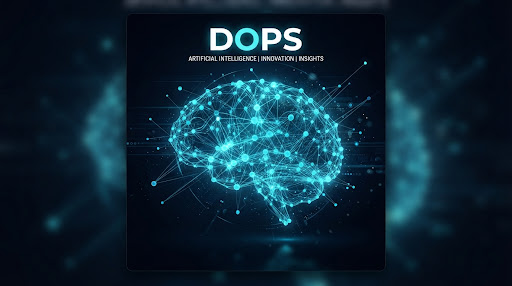
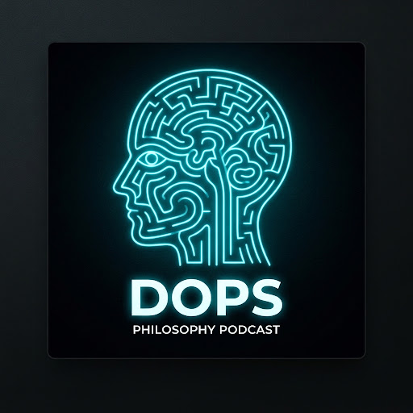

سلام، محمد نعمت 👋
به داپس — پلتفرم هوشمند پادکست فارسی خوش آمدید؛ ادامه پادکستهای خود را پیگیری کنید.
search
در حال گوش دادن • پادکست دنیای فردا
• فصل چهارم
آینده عاملهای هوشمند؛ آیا هوش مصنوعی جای ما را میگیرد؟
بررسی فنی نسل نوین مدلهای چندوجهی استدلالی و بازتعریف کارکردهای شناختی انسان معاصر با حضور دکتر کاوه رادمنش.
۶۸٪ شنیده شده • ۲۸:۴۵ از ۴۲:۱۵
باقیمانده: ۱۳:۳۰

قسمت ۸۴

headphones
۱,۲۴۰ دقیقه
↑ ۱۸٪ بیشتر از هفته گذشته
subscriptions
۲۴ پادکست
۳ کانال با اپیزود جدید
bookmark
۳۶ اپیزود
تقریباً ۱۸ ساعت محتوا
queue_music
۷ فهرست
آخرین ویرایش: دیروز
اخیراً پخش شده
مشاهده تاریخچه کامل ←
play_arrow
۲۸:۰۰

play_arrow
۵۱:۱۰

play_arrow
۳۶:۲۰
کانالهای برگزیده من (۲۴ کانال)
دنیای فردا
هفتگی • ۸۴ اپیزود
نقطه صفر
دوهفتگی • ۴۹ اپیزود
کافه تکنولوژی
هفتگی • ۱۰۲ اپیزود
مسیر رشد
ماهانه • ۳۵ اپیزود
قسمتهای ذخیرهشده برای بعد (۳۶ قسمت)
مدیریت همهتحلیل فلسفی هوش مصنوعی و آگاهی دیجیتال
دنیای فردا • ۴۵ دقیقه • ذخیره شده ۲ روز قبل
چگونه در دنیای پرهیاهو عمیق تمرکز کنیم؟
مسیر رشد • ۳۱ دقیقه • ذخیره شده این هفته
موتورهای بازیسازی جدید و متاورس واقعی
کافه تکنولوژی • ۵۸ دقیقه • ذخیره شده هفته گذشته
پخش خودکار بعد از اتمام هر اپیزود فعال است.
پلیلیستهای شخصی من
directions_subway
۲۴ اپیزود
مسیر رفتوآمد روزانه
اپیزودهای فشرده زیر ۳۰ دقیقه برای ترافیک و مترو
مجموعاً ۱۲ ساعت
hub
۱۸ اپیزود
یادگیری عمیق و هوش
گفتگوهای عمیق پیرامون معماری شبکه و الگوریتمها
مجموعاً ۱۶ ساعت
self_improvement
۱۲ اپیزود
آرامش و تأمل آخر هفته
مباحث فلسفی، تاریخ هنر و روایتهای آرامشبخش
مجموعاً ۹ ساعت
code
۹ اپیزود
تمرکز کاری و کدنویسی
پادکستهای تخصصی بدون حاشیه برای زمان برنامهنویسی
مجموعاً ۷ ساعت
پیشنهادهای هوشمند الگوریتم
بر اساس سلیقه شما
۹۸٪ تطابقفراسوی ادراک دیجیتال
بررسی مرز میان هوشیاری سایبری و منطق زیستی
۳۲ دقیقه

۹۴٪ تطابقشهروندان فردا
سبک زیست شهری در عصر انقلاب خودمختاری
۳۸ دقیقه
رویدادهای اخیر شنونده
historyدنبال کردن کانال «دنیای فردا»
۳۰ دقیقه پیش • خودکار همگام شد
ذخیره اپیزود ۸۴ در پلیلیست «یادگیری عمیق»
امروز، ساعت ۰۸:۲۰
اتمام پخش قسمت ۱۲ از پادکست نقطه صفر
دیروز، ساعت ۲۲:۱۵
دانلود آفلاین اپیزود ۵۶ (کیفیت استودیویی)
۲ روز پیش • روی دستگاه تبلت
همگامسازی ابری: فعال (DOPS Cloud)